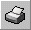
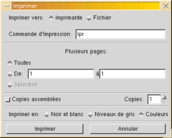

About AbiWord
About Open Source
Index
Contents
What's New
Check Version
Introduction
Installation
Getting Started
The Workspace
Entering Text
Formatting
Edit Commands
Paragraphs
Styles
Inserting Objects
Printing
Preferences
Shortcuts
abisource.com
FAQ
Credits
Search
|
|
Since AbiWord is WYSIWYG (What You See is What You
Get), make sure
the document looks the
way you want it to (you may need to adjust the
zoom to see the whole document
at once).
To print, take one of the following actions:
- Click on the icon "'Print". This will send the current
document immediately to the default printer. You can continue to work while
it is printing.
- Go to the File menu and click on "Print".
- Use the keyboard shortcut by simultaneously pressing the
"Ctrl" and "P" keys.
The last two actions will produce a Print Dialog Box.
Print Dialog Box
Windows
|

Windows Print Dialog Box |
- Select the printer you want to use by clicking on the list box next to "Name:".
The property button lets you modify the parameters bound to the printer,
such as the paper size used (A4, A5...), orientation (portrait or landscape) and
print quality.
- Page range:
- To print the whole document, select the option"All x
pages".
- To print only some pages, check the option"Pages" and then complete the
field "From.....to...."
- Copies:
This lets you select how many copies of the
document to print.
Once you have selected the options, confirm by clicking on the OK button,
or click on the Cancel button to not print.
Linux
|

Linux Print Dialog Box |
- Select the printer by changing "lpr" to "lpr -Pprinter". You can
select the paper size by configuring your print filter; see /etc/printcap for
where that is.
- If the "Print to file" option is checked,
the printing will not happen on the selected printer. This option will
generate a file which you can later print on another machine
which does not have AbiWord available. You must, however,
print it on the same model of printer that you selected
when you created it. In Unix, the file so created will be
a PostScript 2.0 file with the extension ".ps", which
you can print on any printer that understands PostScript or is
set up with Ghostscript as the print filter.
- If you are using the Gnome version, then you will be able to print to a pdf file.
- Page ranges:
- To print the whole document, select the option"All x
pages".
- To print only some pages, check the option"Pages" and then complete the
field "From.....to...."
- Collate: Select to have your printed copies collated.
- Copies:
This lets you select how many copies of the
document to print.
Once you have selected the options, confirm by clicking on the OK button,
or click on the Cancel button to not print.
|